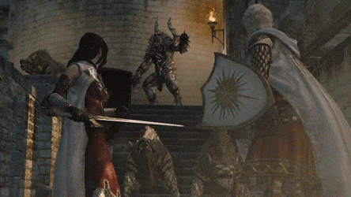
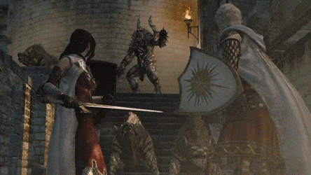

About the Game
Embark on your grand adventure, Arisen! Dragon's Dogma is a single-player, story-driven action RPG series that challenges players by allowing them to choose their own experience with their Arisen, from their appearance to their quest, their faction, how they approach different situations, and more. The long-awaited installment of the series introduces you to the explorable fantasy world of Dragon's Dogma 2. Along your journey, you'll be joined by mysterious otherworldly creatures, the Pawn, in a unique adventure where you feel like you're joining other players on your own adventure. All of these elements are further enhanced with physics technology, artificial intelligence (AI), and state-of-the-art graphics to create a truly immersive fantasy world in Dragon's Dogma 2.